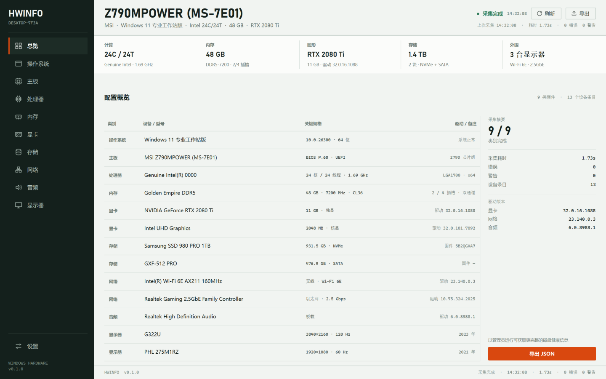
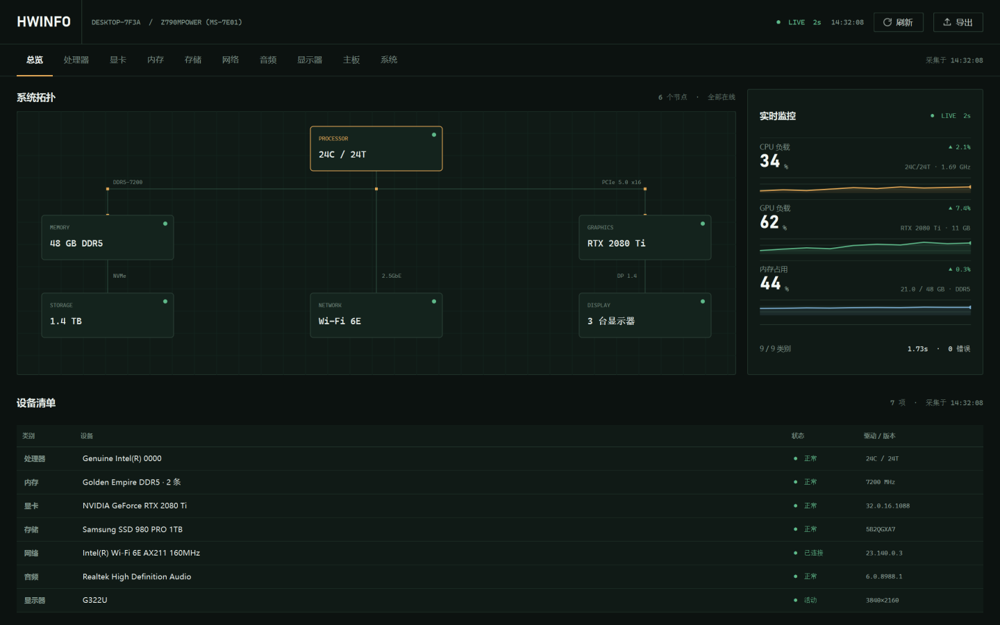

同一份 mock 数据（取自项目真机采集结果），只验证视觉方向和信息架构，不接真实采集、不改动现有 gui/。
两版都只使用系统字体，不打包字体文件，符合「单文件 EXE 体积优先」的约束。

深色左导轨 + 机器身份条 + 系统带 + 规格表 + 采集摘要侧栏。信息密度高，适合「一次看全、截图存档、发给别人」。

顶部品牌栏 + 横向标签 + 自绘系统拓扑 + 实时指标（sparkline）+ 设备清单。突出实时监控与硬件拓扑关系。
| 维度 | A · Bench Sheet | B · Night Bench |
|---|---|---|
| 气质 | 工程数据表、可信、克制，像仪器铭牌 | 诊断台、沉浸，偏游戏/超频玩家 |
| 信息密度 | 高，一屏看全 9 类硬件 | 中，拓扑和曲线占用空间 |
| 实时监控 | 不适合，无天然位置 | 天然适合，已有 LIVE + sparkline 位置 |
| 长时间阅读 | 好，浅色纸面 + 等宽数字 | 一般，深色下长文本更累 |
| 实现成本 | 较低，表格 + QSS 即可 | 较高，需要自绘拓扑、sparkline、定时刷新 |
| 单文件 EXE 体积 | 契合，系统字体即可 | 契合，自绘不引入额外依赖 |
| 主要风险 | 没有实时监控，硬件工具的「工具感」偏弱 | 深色 + 荧光容易落入模板化；实现和性能成本更高 |